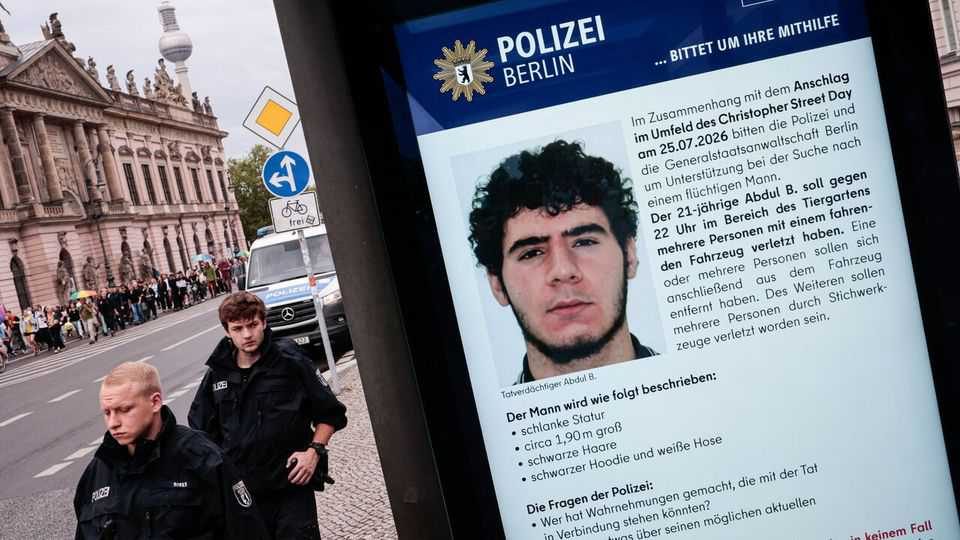

The Berlin terror attack exposes deep failings in the state
Germany knew Abdul Ballout was dangerous. It let him go anyway

Jul 30th 2026
“LONE WOLF” terrorists are a headache for security officials. It is hard to detect extremists who self-radicalise online, do not attend mosques and plan attacks alone. Germany, where the Islamist terrorist threat arrived relatively late, has had to learn this lesson. In 2024 a Syrian failed asylum-seeker who had evaded deportation killed three people in a stabbing spree in Solingen, near Düsseldorf. Although he was aligned with Islamic State (is), he was never identified as a security threat.
But with Abdul Ballout the warning lights could not have flashed more brightly. On July 25th Mr Ballout is alleged to have driven a van into crowds leaving Berlin’s Christopher Street Day parade, a gay-pride event, before reportedly stabbing a number of people. (He fled, and was later shot dead by police.) A Polish woman was killed, and dozens hurt. Mr Ballout is said to have left behind a short confession video pledging his allegiance to is. The attack cannot have surprised the German security agencies, because they had been tracking him for years.
A teenage troublemaker convicted of assault and robbery, Mr Ballout appears to have been radicalised online and via extremist preachers in Berlin, his home city. He twice pursued jihadist connections abroad, in Mauritania and later Lebanon, from where he intended to join is fighters in Syria. The second trip saw him imprisoned in Lebanon last year. Officials there informed their German counterparts, and on his return home Mr Ballout was immediately placed into pre-trial detention. In May a Berlin court handed him a prison sentence of one year and ten months, under juvenile criminal law (which can apply to young adults), for “preparing a serious act of violence endangering the state”.
By then police had flagged Mr Ballout as a serious security risk. Yet he was released after the verdict, pending a later decision on whether to enforce the sentence, and ordered to attend a deradicalisation course. Juvenile law in Germany emphasises rehabilitation over the security risks that an individual may pose, says Peter Neumann, a German security expert at King’s College London. The court itself wrote that it was not convinced that Mr Ballout would not transgress again. His movements and communications remained under surveillance; a covert camera captured him leaving his flat on the night of the attack. Mr Ballout carried out his deadly atrocity in plain sight.
The attack inspired odd leaps of logic. Some politicians called for deporting immigrant criminals faster and reversing a recent liberalisation of naturalisation rules. Friedrich Merz, the chancellor, said Germany should consider stripping citizenship from dual nationals convicted of heinous crimes. None of this would have stopped Mr Ballout, a citizen of Germany alone, born in Berlin to Lebanese parents. His case shows that Germany’s Islamist threat is not merely imported.
Others are asking more pointed questions about an apparently awkward disjunct between the security services and courts. Berlin’s judicial authorities insist they followed the law in releasing Mr Ballout. But many wonder how a man convicted of extremist-related offences, and regarded as a serious security threat, could nonetheless have been set free. “The question is whether the system needs reform, or whether its application was wrong,” says Hans-Jakob Schindler, an expert on terrorism at the Counter Extremism Project, an ngo. “But it certainly looks odd.”
Since 2001 Germany has passed reams of anti-terrorism measures. Yet so glaring are the apparent missteps in this case that more seem inevitable. Alexander Dobrindt, the interior minister, called for expanding preventive detention, curtailing the use of juvenile courts and more electronic monitoring. The Bundestag will soon consider a law to increase the powers of domestic spooks, currently hamstrung by strict rules on data protection and other matters. There have been over 20 Islamist terrorist acts in Germany since 2001. Few doubt there will be more. ■